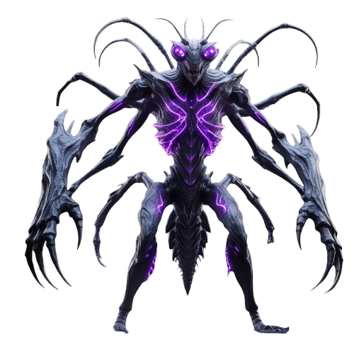

🕷️ ДРЕВНИЙ СТРАЖ
HP 10 800 / 15 500

📋 Древний Страж — что собрано
Фон-улей
— пещера с фиолетовыми коконами и венами
Дыхание фона
— медленный зум 100→103% за 6с, яркость ±15% (органическая жизнь улья)
Босс чуть ниже
— bottom 9%, лапы на «венах» пола
Bio-luminescence
—
drop-shadow #bf00ff
пульсирует синхронно с фоном (6с цикл)
Микро-вибрация
— лёгкое дрожание ±0.5px каждые 0.14с (ощущение насекомого с напряжёнными лапами)
Маска лап
— нижние 18% растворяются в пол
Слой слизи
z:7
— 8 фиолетовых капель падают сверху на фоне босса, разные скорости 4.5–6.5с
10 парящих частиц
— фиолетовая пыльца снизу вверх